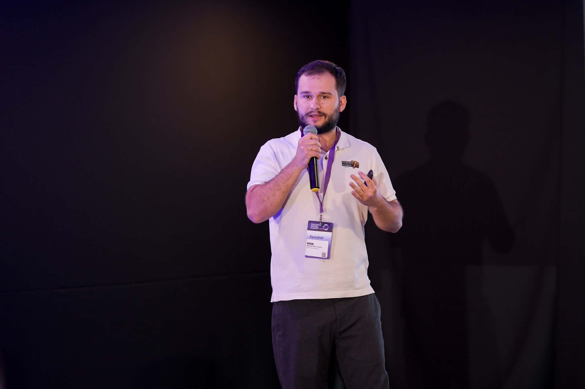
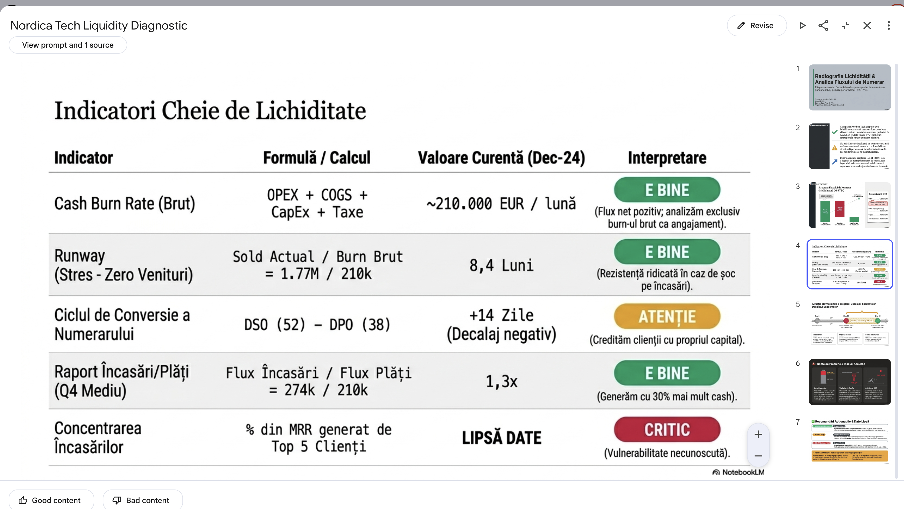
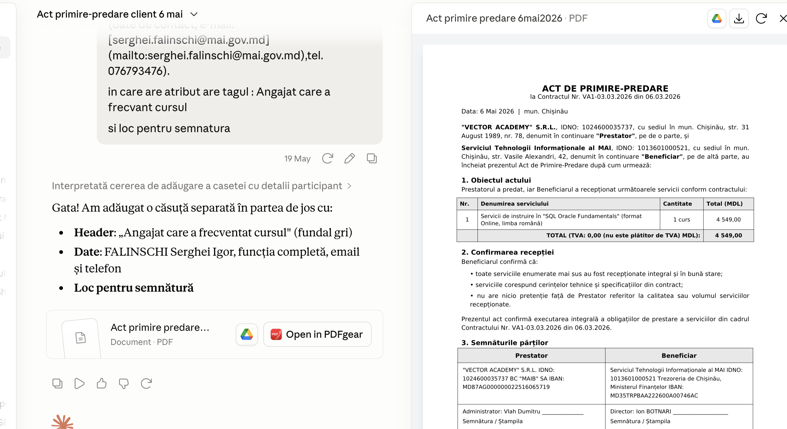
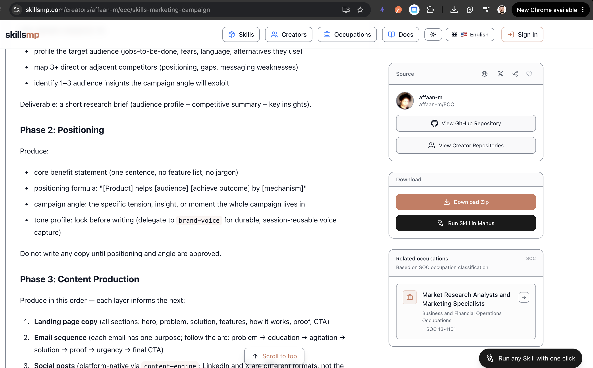
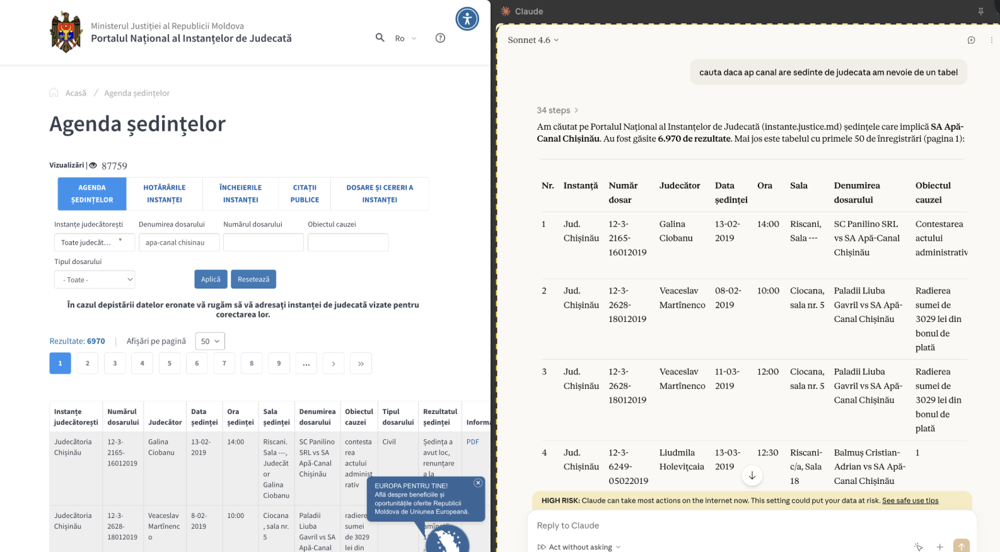
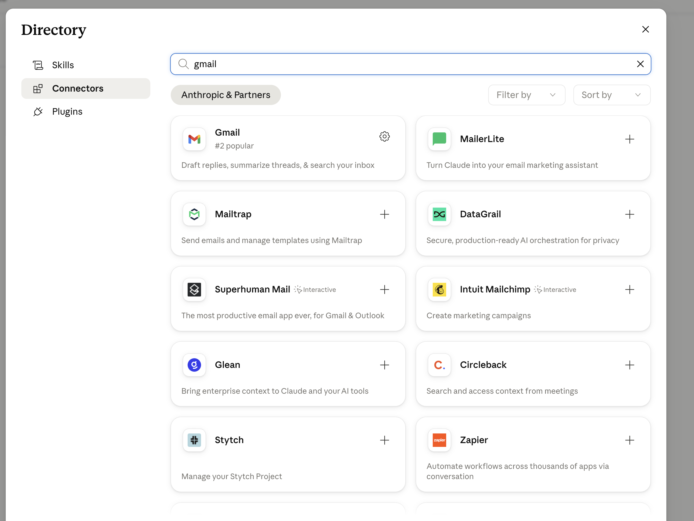
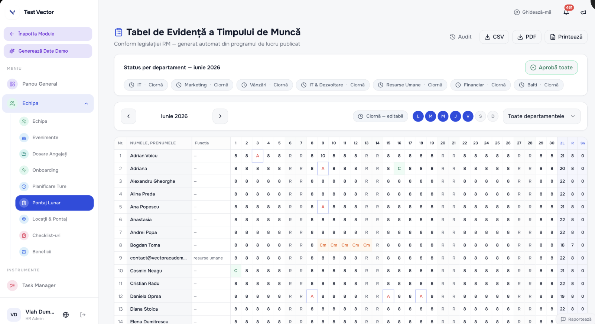
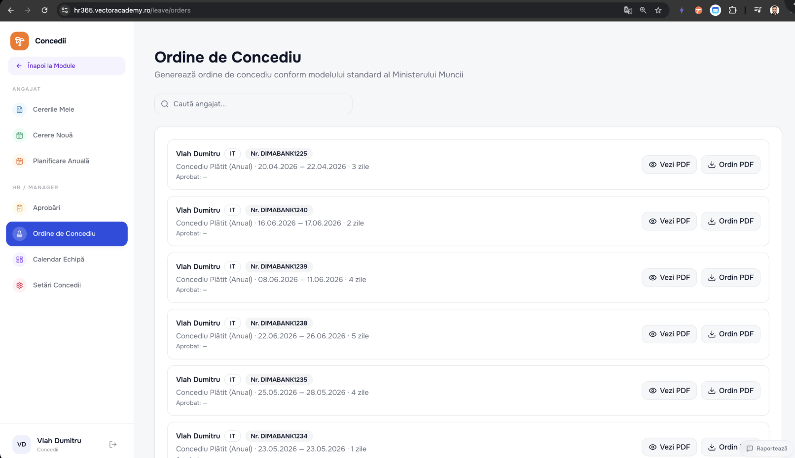
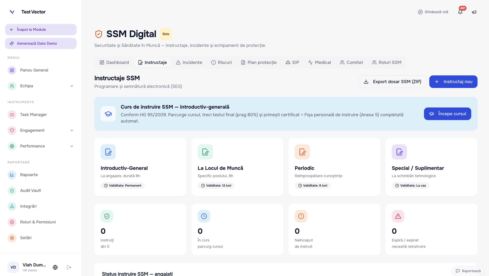

AI pentru Documente,
Dosare și Proiecte Publice
Azi automatizăm rutina și câștigăm timp — ca să ne concentrăm pe decizii, nu pe copy-paste între documente
Învățăm împreună

Astăzi învățăm cum să
utilizăm busola AI
 🧭
🧭
Acum tu — spune-ne în 30 de secunde
Pe rând, fiecare răspunde la cele 5 puncte — așa calibrăm sesiunea pe grupul real
Ce acoperim azi
Focus pe documente, dosare & automatizare — pe decizii, nu pe copy-paste. Blocurile PRACTICĂ le faci live pe cazurile tale.
- 1Cunoașterea grupului + Care AI când
- 2Prompt Engineering aplicatPRACTICĂ
- 3Ecosistemul Google + NotebookLMPRACTICĂ
- 4Gems — asistenți GeminiPRACTICĂ
- 5Projects — ChatGPT & ClaudePRACTICĂ
- 6Ollama local + verificarea răspunsurilor AI
- 7Claude: Excel, Cowork, Skills — volume mari
- 8MCP: email, Drive, SharePoint, OutlookPRACTICĂ
- 9Agenți AI · Lovable · Make.comPRACTICĂ
- 10Securitate, Legea 195/2024 & prețuri
- 11Lifehacks + Închidere
AI-ul e genial — dar are nevoie de tine la volan 😄
Trei povești adevărate despre ce se întâmplă când ai încredere oarbă în AI
Plecau în Mexic. Au întrebat ChatGPT dacă au nevoie de viză → „nu". Au cumpărat biletele. La aeroport au aflat că aveau nevoie de viză — și au pierdut zborurile.
A cerut ChatGPT cazuri juridice pentru un proces. AI-ul a inventat 6 cazuri inexistente cu citate plauzibile. Le-a depus în instanță — și a fost sancționat de judecător.
Un angajat din finanțe din Hong Kong a intrat într-un apel video cu „CFO-ul" și colegii. Toți erau deepfake AI. A aprobat un transfer de 25M USD.
Care AI e cel mai bun? — depinde ce faci
Toate trei fac aproape orice azi. Diferența reală: în ce ecosistem te conectează și unde te duc mai departe.
Calitatea promptului = calitatea rezultatului
❌ Prompt slab
✅ Prompt bun
Anatomia unui prompt eficient
Modelele moderne deduc singure rolul — concentrează-te pe context, sarcină, format și restricții
Zero-shot — ceri direct, fără exemple
AI-ul deduce singur cum să răspundă. Funcționează când sarcina e clară și formatul e uzual.
Când funcționează: sarcini clare cu format standard — rezumat, traducere, întrebare simplă.
Când nu funcționează: când vrei un stil specific sau un format neobișnuit.
Few-shot — îi arăți cum vrei, nu îi explici
Dai 1–3 exemple de output dorit → AI-ul prinde tiparul și continuă în același stil
Pasul 2: Ceri noul output în același format
Unde ajută în instituții: clasificarea corespondenței pe direcții, denumiri standard în registre, răspunsuri-tip la petiții — orice are format repetat și „limbajul" instituției.
Multi-prompt — spargi o sarcină mare în pași
Pentru dosare complexe, nu ceri tot dintr-un prompt. Conduci AI-ul pas cu pas — fiecare pas verifică pasul anterior.
Meta-prompting — AI-ul îți scrie promptul
Când nu știi cum să formulezi, ceri modelului să construiască el promptul ideal pentru tine
Scrie-mi tu promptul ideal pentru asta.
Dacă îți lipsesc detalii, întreabă-mă întâi."
Spui în cuvinte simple ce vrei să obții, fără să te chinui cu formularea.
Îți cere detaliile care lipsesc — context, ton, public, format.
Un prompt structurat pe care îl refolosești de fiecare dată.
Scrie un prompt în formă liberă
Fără reguli impuse — scrie cum ai scrie în mod normal. Îl rafinăm împreună.

Google AI — nu un tool, un ecosistem
Dacă instituția e deja pe Google, AI-ul tău e deja conectat la documentele tale
| Tool | Ce face | Când îl folosești |
|---|---|---|
| 🔵 Google Workspace + Gemini | Gemini activ în Gmail, Docs, Calendar, Drive, Sheets — acționează direct | Deja pe Google → zero tool nou |
| ✨ Gemini Chat | Chat avansat cu acces la web, drafturi, analize | Sarcini rapide, research, texte |
| 🔎 Deep Research | Raport pe zeci de surse, cu citări verificabile | Practica altor instituții, studii, finanțări |
| 📓 NotebookLM | Răspunsuri din documentele tale, cu citat exact | Legislație, dosare, regulamente |
| 💎 Gems | Asistent pre-configurat pe sarcina ta repetitivă | Răspunsuri la petiții, decizii, registre |
| 📊 Canvas | Prezentări și documente generate din prompt | Rapoarte și prezentări pentru conducere |
Gemini în Google Workspace
Conectezi conturile Google — chiar și pe gratuit — și Gemini acționează în Gmail, Calendar, Drive

Deep Research — ore de research în minute
Îi dai o temă → caută pe zeci–sute de surse → raport cu citări verificabile
NotebookLM — răspunsuri din lege, nu din imaginație
Răspunde doar din sursele tale, cu citate verificabile — de încredere pentru legislație și dosare

Întreabă-ți propriile documente
Acuratețe cu citate — pe actele normative și dosarele tale reale

Cum folosesc NotebookLM pe un dosar mare
Un dosar cu zeci de documente — NotebookLM îl ține pe tot „în cap", tu doar întrebi

Verifică un registru întreg — pas cu pas
Registrul de corespondență/petiții consolidat într-un Google Sheet = o sursă → NotebookLM îl verifică rând cu rând, cu citate
Construiește o prezentare cu AI
Gemini Canvas — o prezentare sau un raport întreg dintr-un prompt

Gems — asistentul tău, configurat o dată
Instrucțiuni salvate pentru o sarcină repetitivă. Setezi o dată, rulezi ori de câte ori ai nevoie.
Asistent decizii & încheieri · juridic
Lipești contestația/cererea → rezumă argumentele, articolele invocate, termenele și punctele de verificat.
Răspuns la petiții · relații cu publicul
Dai petiția → draft de răspuns oficial în formatul instituției, cu temeiul marcat „de verificat".
Registre & termene · necesită tabel
Încarci registrul → termene depășite, intrări fără răspuns, alerte pe scadențe, în formatul tău.
Double-check · control
Întâi analizează ce variabile sunt în document → apoi le compară între ele și semnalează inconsecvențele.
Creează-ți primul Gem
gemini.google.com → Manager Gems → Gem nou

Gem „Verificare dosar" — compară documentele între ele
Îi dai actele unui dosar → scoate datele cheie în tabel și le potrivește între ele (cererea vs. anexele vs. registrul). Tu doar confirmi.
1. Extrage
Din fiecare document → părți, date, sume, termene → un rând în tabel.
2. Compară
Pune datele față în față: cererea vs. anexele vs. registrul → ✅ concordă, ⚠️ diferență, ❌ lipsește.
3. Livrează
Tabel final + listă „de verificat manual". Tu confirmi, nu cauți.

Un Gem nu-ți dă doar text — îți dă documentul în PDF
În instrucțiuni îi ceri să ruleze un mic script (Python + ReportLab) → încarci datele și primești adeverința sau ordinul în PDF, în formatul instituției.
Instrucțiuni cu regulile tale fixe
Antetul instituției, structura actului, câmpurile obligatorii — le scrii o singură dată în Gem.
Încarci cererea → iese un PDF
Dai cererea angajatului / datele solicitantului → Gem-ul generează INSTANT adeverința sau ordinul în PDF, gata de semnat.
Mereu la fel, fără greșeli de format
Nu mai copiezi în Word, nu mai ajustezi manual — același layout de fiecare dată, cu datele completate corect.

generează PDF (Python · ReportLab)Instrucțiuni → PDF
Projects — un dosar permanent cu context
Setezi o dată instrucțiuni + fișiere. Toate chat-urile din Project pornesc cu acest context.
❌ Chat obișnuit
Fiecare conversație începe de la zero. Reîncarci legea, regulamentul, dosarul — de fiecare dată.
✅ Cu un Project
Setezi o dată: instrucțiuni + fișiere. Tot ce ceri iese deja în contextul instituției — analiză, notă, proiect de decizie.
| ChatGPT Projects | Claude Projects | |
|---|---|---|
| Punct forte | Integrări externe mai multe | Documente multe și lungi |
| Documente | Limite mai mici | 5+ fișiere dense (legi, regulamente, dosare) |
| Ideal pentru | Fluxuri conectate la alte tool-uri | Dosare mari, legislație, contestații |
Creează-ți primul Project
Pe o contestație, un proiect public sau un flux repetitiv

Ollama — un LLM care rulează pe calculatorul tău, offline
Îl instalezi ca pe orice program. Datele nu părăsesc calculatorul — perfect ca să anonimizezi un document înainte să-l trimiți în Claude sau alt AI din cloud.
Rulează 100% local, offline
Modelul stă pe calculatorul tău. Poți lucra fără internet — datele cetățenilor nu ajung niciodată pe serverele nimănui.
Folosește resursele calculatorului
Consumă procesorul, memoria RAM și placa video ale computerului tău. Cu cât PC-ul e mai puternic, cu atât răspunde mai repede.
Gratuit, fără abonament
ollama.com → descarci → alegi un model (Llama, Mistral, Gemma). Zero cost, zero DPA de semnat — datele oricum nu pleacă.
Compararea documentelor — pune-le față în față
Cea mai cerută sarcină din formularul vostru: versiuni, cerere vs. anexe, decizie vs. executare. AI-ul face tabelul diferențelor — tu decizi ce contează.
Două versiuni ale aceluiași act
„Compară v1 și v2 ale regulamentului — listează fiecare diferență: articol / ce s-a schimbat / impact."
Cererea vs. actele anexate
„Verifică dacă anexele corespund listei din cerere — ce lipsește, ce nu corespunde, unde diferă datele."
Decizia vs. executarea ei
„Compară măsurile dispuse în decizie cu acțiunile raportate — tabel: măsură / termen / executat? / dovada."
Fără formulări inventate — cum verifici ce-ți dă AI-ul
Regula instituției: AI-ul pregătește, funcționarul semnează. Verificarea nu e opțională — e pasul care te protejează.
Nota-raport dintr-un dosar întreg — cap-coadă
Cazul unui participant (din formular): analiza simultană a documentelor unui dosar de achiziție + compararea deciziei cu acțiunile autorității → notă-raport cu constatări, riscuri și concluzii.
1 · Încarci tot dosarul
Decizia, actele autorității contractante, corespondența — într-un Project sau în NotebookLM.
2 · Compari măsuri vs. acțiuni
„Pentru fiecare măsură dispusă în decizie: a fost executată? cu ce act? în termen?" → tabel.
3 · Generezi nota-raport
Constatări, riscuri, concluzii — în formatul instituției, cu trimiteri la documentele-sursă.
constatări · riscuri · concluziidosar întreg → un document de verificat
Claude — pe lângă Projects
Capabilitățile pe care le explorăm în continuare
Claude în Excel
Add-in nativ Microsoft: citește workbook-ul, depanează formule, modifică pe celule.
Cowork — execuție autonomă
Îi dai un task și-l duce singur la capăt, mai mulți pași, fără supraveghere.
Skills — documente reale
Generează .docx, .pdf, .xlsx în formatul tău — nu text în browser.
MCP & conectori
Drive, Gmail, Outlook, Chrome extension — acționează în uneltele tale.
Documente lungi
Dosare, contestații, acte normative — cel mai puțin halucinații.
Claude for Work
Versiunea de organizație: DPA, date în siguranță, Projects & Skills partajate.
Claude în Excel — registre și calcule fără formule
Add-in nativ Microsoft: Claude citește, înțelege și modifică fișierul tău, direct în Excel

Chat clasic vs. Cowork
Diferența fundamentală: cine execută pașii
Ce poate face Cowork pentru tine
Task-uri pe care le faci azi manual — Cowork le duce singur la capăt
Extragere date în masă Cowork
Zeci de cereri sau petiții scanate → un tabel structurat (petiționar, obiect, dată, termen), fără introducere manuală.
Organizare dosare Cowork
Scanează un folder dezorganizat → propune schemă → redenumește și sortează după aprobare.
Gmail + Excel — cereri concediu Cowork
Preia cererea de concediu din Gmail → o înregistrează automat în tabelul de concedii din Excel.
Rapoarte combinate Cowork
Date din email + Excel + documente → raport consolidat, în format standard.
Claude e ca un junior pe care-l formezi
Un absolvent care tocmai a venit la lucru: isteț, știe câte ceva — dar îl înveți tu meseria ta.
Junior, prima zi
Absolvent isteț. Știe bazele dreptului și ale administrației — dar generic, fără contextul instituției tale.
Bazele administrațieiDupă ce-l formezi
Acum livrează ca un specialist al instituției tale.
Ce sunt, de fapt, skills?
O competență pe care i-o dai lui Claude — o dată — și o folosește singur de fiecare dată.
O rețetă salvată
Un fișier cu instrucțiuni: cum faci un lucru, pas cu pas, în formatul tău.
Se cheamă singur
Când taskul se potrivește, Claude încarcă skill-ul automat — nu-i spui tu de fiecare dată.
Mereu la fel
Același rezultat, în formatul instituției tale, de fiecare dată — fără să reexplici.
Skills — generează documente reale, nu text
Instrucțiuni + template → Word / PDF / Excel. Formatul instituției tale, de fiecare dată.
Ordin / dispoziție
Datele angajatului + tipul actului → draft ordin .docx gata de semnat.
Notă informativă din mai multe surse
Pe baza mai multor documente → extrage informația și generează o notă consolidată.
Skill „Analiză de dosar"
Skill pregătit → analiză standardizată a unui dosar: acte, termene, riscuri.

Skill de verificare — Claude face registrul, tu verifici
Skill-ul îi spune lui Claude exact ce câmpuri să scoată și cum să le potrivească. Cowork îl rulează în masă. La final verifici că s-a extras corect.
Fișier .md (Markdown) — în el „trăiesc" skill-urile
Text simplu, ușor de citit pentru AI. Un skill = un fișier .md — de asta îl iei, editezi și partajezi ușor.
Fișier .md
Markdown — text simplu, structurat
Text cu titluri, liste și bold. Îl scrii ușor, iar AI-ul îl citește perfect. E formatul în care sunt scrise și skill-urile.
Notă informativă
Obiect: problema și temeiul
Structură
- constatări
- riscuri & termene
- propuneri
Skill-uri gata făcute — le iei dintr-un marketplace
Un skill = un fișier .md (SKILL.md) cu instrucțiuni. Nu-l scrii de la zero — îl iei gata făcut, în două feluri.
Cu Claude Code — din GitHub
Îl tragi direct din repo: /plugin marketplace add → /plugin install. Apare instant.
Manual — descarci .md-ul
Descarci SKILL.md (sau ZIP) și-l pui în folderul ~/.claude/skills/. Gata.

(GitHub repo · Download)skillsmp.com
Generează un document real
Ce este un API
Nu trebuie să programezi — dar e util să înțelegi cum se conectează tool-urile
Ce este MCP
Standardul prin care un AI se conectează și acționează în aplicațiile tale
API vs. MCP — ca prizele și adaptorul universal
Cea mai simplă imagine ca să ții minte diferența
Ce este GitHub
Locul unde stă codul integrărilor și al skill-urilor — și unde se vede întreaga lor istorie
Și dacă instituția e pe Microsoft? — Word, Outlook, SharePoint
Același principiu, alt ecosistem. Un participant din formular a setat deja un agent Office care editează documente Word.
Claude add-in în Excel, Word & Outlook
Add-in-uri native Microsoft — AI-ul citește și modifică documentul direct în aplicație, nu prin copy-paste.
Copilot + agenți Office
Dacă instituția are M365 Copilot, agenții lucrează în Word / Outlook / SharePoint — inclusiv editare de documente pe comandă.
Conectori MCP pentru SharePoint & Outlook
Claude se leagă la fișierele din SharePoint și la corespondența din Outlook — aceleași fluxuri ca pe Google.
Word · Outlook · SharePointadd-in + conectori MCP
Ce poate face Claude conectat la aplicațiile tale
Nu doar citește — acționează: scrie emailuri, adaugă fișiere, creează taskuri
❌ Fără MCP
✅ Cu MCP
„Trimite răspunsul de confirmare petiționarului din Gmail" → îl trimite.
„Adaugă în Calendar ședința de joi la 10:00" → adaugă.
Cum adaugi un conector: iei un link și-l lipești în Claude
Nu programezi nimic. Un conector MCP e, practic, un link (URL). Îl copiezi de la furnizor și-l adaugi în Setări → Connectors.
https://mcp.…)Extensia Claude pentru Chrome
Acționează direct în browser: extragere de date și task-uri repetitive pe portaluri, fără copy-paste

Claude + Google Drive
Claude citește fișierele din Drive-ul tău fără să le descarci
Secretariat
„Din folderul Petiții 2026, listează intrările fără răspuns și fă un tabel cu termenele" → Claude citește și construiește tabelul.
Jurist
„Compară contractul nou cu template-ul nostru — ce clauze diferă?"
Achiziții
„Din dosarul procedurii, găsește documentele lipsă față de opis și fă lista de follow-up."
Documente multilingve
Acte în RU/EN → traducere + extragere obligații în același prompt.
Claude + Gmail
Claude citește emailuri, redactează și trimite — din conversația cu tine


Totul împreună: Email → Claude → Registru
Claude stă în mijloc, conectat prin MCP: citește din email și scrie direct în registrul din Excel — singur
Ce este un agent — fără cod
Un agent = îi dai un obiectiv, nu o comandă. El alege pașii, folosește unelte, verifică și livrează.
Bucla de tool-use — cum „gândește" un agent
Același ciclu, repetat până taskul e gata. Asta e tot „secretul" din spatele unui agent.
Agent vs Skill — ce e diferența
Amândouă te ajută, dar fac lucruri diferite. De fapt, se combină.
Workflow — harta pe care o urmează agentul
Un workflow e roadmap-ul agentului: pașii de la obiectiv la rezultat. Tu îi desenezi drumul.
Înlănțuire (Chaining) — pași ficși, mereu în aceeași ordine
Ieșirea unui pas = intrarea următorului. Predictibil — verifici rezultatul la fiecare pas.
Direcționare (Routing) — clasifici, apoi trimiți pe calea potrivită
Un singur tip de input intră → ajunge la procesul potrivit pentru el.
→
→
Paralelizare — mai multe lucruri deodată
Spargi un task în bucăți care nu depind una de alta și le rulezi simultan.
Orchestrator — un dispecer împarte, executanții fac
Când nu știi dinainte câte sub-sarcini sunt — dispecerul decide la fața locului.
Un agent al instituției, cap-coadă
Exemplu: agentul de raportare lunară — adună datele, calculează, scrie raportul. Tu doar aprobi.
Cum arată un agent al instituției — vizual
Un obiectiv → mai multe acțiuni, în paralel. Exemplu: a intrat o petiție nouă.
nouă primită
CLAUDE.md — legea agentului
Nu doar tonul instituției. Reguli clare pe care agentul le respectă și le învață: după orice feedback, le adaugă la cunoștințe.
Bucla care-ți îmbunătățește nota singură
Pe documentul tău real: 5 variante de notă → critică → versiunea finală, fără să rescrii tu de 5 ori.
Igienă de context — 3 reguli ca AI-ul să nu se „încețoșeze"
Context plin = model mai lent, mai „prost" și limite consumate mai repede.
O sarcină = un dialog
Nu îngrămădi tot în același chat. Analiza dosarului într-unul, redactarea notei în altul.
Stai sub ~50% context
Peste prag → deschide un dialog nou. Răspunsurile rămân ascuțite.
Proiect mare → dialog nou
Dai fișierul de context la start: „ai CLAUDE.md — pornește lucrul".
Cu context, AI-ul decide ca un coleg — nu întreabă ca un străin
Când știe instituția, procedurile și formatele actelor, nu mai ceri totul de la zero.
Schedule — Claude lucrează singur, la oră fixă
Îi setezi o dată o sarcină recurentă (zilnic, săptămânal) → o execută singur, pe baza knowledge-ului tău (Project + Skills), și-ți lasă rezultatul gata.
Drafturi de răspuns, în fiecare dimineață
„În fiecare zi la 8:00, citește petițiile și emailurile noi și pregătește-mi drafturi de răspuns pe baza răspunsurilor noastre standard." Tu doar revizuiești și trimiți.
Raport recurent, fără să-l ceri
„În fiecare vineri la 17:00, adună statistica săptămânii (petiții, termene, restanțe) și scrie sumarul în formatul instituției." Îl găsești gata luni dimineață.
Curățenie în documente, în fiecare dimineață
„În fiecare zi la 7:30, ia documentele noi din Drive, redenumește-le după regulă și pune-le în folderul corect." Vii la lucru cu totul sortat.
De la idee la aplicație funcțională — fără cod
Descrii în cuvinte → primești o aplicație reală cu link public. Accent pe automatizări, nu pagini statice.
Calculator de vechime & concedii
Introduci data angajării, treapta și zilele folosite → vezi vechimea și zilele de concediu rămase. Link intern pentru toți colegii.
Generator de documente standard
Auto-generare de documente repetitive — adeverințe, cereri-tip, formulare — completate din câteva câmpuri.
Checklist de depunere pentru cetățeni
Solicitantul bifează actele necesare pentru dosarul lui → vede ce lipsește înainte să vină la ghișeu.
Construiește o mini-aplicație live
Automatizări vs. AI — când alegi ce
Dacă procesul e același de fiecare dată → automatizare, nu AI
| Automatizare (Make.com / n8n) | AI agent (Claude, ChatGPT) | |
|---|---|---|
| Când îl folosești | Proces repetitiv, același flux de fiecare dată | Sarcini care necesită raționament, variabilitate |
| Exemplu | Email cu cerere → extrage date → adaugă în registru | Analizează un dosar și propune un proiect de decizie |
| Cost | Mic, scalabil, rulează automat | Mai mare per utilizare, necesită prompt |
| Rezultat | Reproductibil 100%, fără intervenție | Variabil, depinde de context |
Make.com vs. n8n — care instrument, când
Ambele fac același lucru — leagă aplicații și rulează fluxuri singure. Diferența e cine le găzduiește și unde ajung datele.
MMake.com · cloud, vizual
Tragi module pe o pânză, le legi vizual. Rulează în cloud-ul lor — nu instalezi nimic. Cel mai ușor de pornit.
✅ Rapid de învățat · sute de template-uri · plan gratuit (~150 cereri/lună)
⚠️ Datele trec prin serverele Make · costul crește cu volumul mare
n8n8n · self-hosted, open-source
Aceeași idee vizuală, dar îl poți instala pe serverul instituției. Gratuit și open-source dacă îl găzduiești singur.
✅ Datele rămân la tine (195/2024) · volum nelimitat fără cost per-operație · flexibil
⚠️ Necesită un pic de setup tehnic (server) · curbă de învățare mai abruptă
| Alegi… | Make.com | n8n |
|---|---|---|
| Când | Vrei să pornești azi, fără IT | Datele nu au voie să iasă din instituție / volum mare |
| Date sensibile | Trec prin cloud-ul Make | Rămân pe serverul instituției |
| Cost la scară | Crește cu nr. de operații | Fix (costul serverului), indiferent de volum |
Flux: Email cu cerere → Google Sheets
Datele cererii ajung automat în registrul de intrare — fără să atingi nimic
Template-uri gata făcute
Nu trebuie să construiești de la zero — Make.com are sute de template-uri
Gmail → Sheets + Drive
Save Gmail emails + attachments to Google Sheets + Drive: cererea primită → documentul salvat în Drive + rând adăugat în registru cu link. Gata de folosit, fără configurare.
Cum funcționează integrarea
Emailul ajunge → Make.com îl preia → AI extrage datele → registrul primește rândul → Drive primește fișierul. Tot automat, tot fără intervenție.
Construiește scenariul pas cu pas
Ghidul complet e în fișierul separat — îl urmărim împreună
Ce NU introduci în AI
Critic în instituții — lucrați zilnic cu datele personale ale cetățenilor (Legea 195/2024)
„Aș posta asta public pe internet mâine?"
| ❌ NU introduce | ✅ Alternativa sigură |
|---|---|
| IDNP, date din buletin / pașaport | „Petiționar A", date anonimizate |
| Dosare cu date personale ale cetățenilor | Anonimizate local (Ollama) înainte de cloud |
| Documente de uz intern, nedestinate publicării | Doar structura, fără conținutul sensibil |
| Date salariale ale angajaților | Procente sau intervale |
| Date din registrele de stat, identificabile | Pseudonimizate (cod intern) |
Cont gratuit vs. plătit — diferența legală
DPA = Data Processing Agreement — contractul prin care furnizorul se angajează că nu folosește datele tale pentru training și respectă GDPR / Legea 195/2024. Fără DPA, nu poți introduce date personale.
| Tool | Cont gratuit | Cont plătit — ce adaugă |
|---|---|---|
| ChatGPT | ❌ Fără DPA — ilegal pentru date personale | ✅ Team/Enterprise: DPA + fără training pe datele tale |
| Gemini | ❌ Fără DPA pe contul personal | ✅ Workspace: DPA automat, date rămân în organizație, nu sunt folosite pentru antrenament |
| Claude | ❌ Pro personal — fără DPA | ✅ Claude for Work: DPA disponibil |
Cum lucrezi eficient — fără să expui date
1 · Anonimizare
„Ion Popescu, IDNP…" → „Petiționar A" → trimiți în AI → primești analiza → completezi manual cu date reale. Cu Ollama, pasul ăsta se face local, automat.
2 · Pseudonimizare
Cod intern per dosar (DOS-2026-047) — lucrezi cu codul; cheia rămâne la tine, în afara AI.
3 · Google Workspace
Cont plătit → Gemini e legal: DPA automat, datele nu sunt folosite pentru antrenament.
20$/lună — cât costă de fapt
Raportat la costul real al unui angajat, nu la cifra brută
HR365 — pontajul și ordinele se generează singure
Suita HR pe Microsoft 365: nu mai completezi tabele manual — te ocupi de oameni, nu de acte


SSM Digital — securitatea muncii, fără hârtii
Instructajele, fișele și evidențele de Securitate și Sănătate în Muncă digitalizate — conformitate fără birocrație

AI Fatigue — când încerci tot și nu implementezi nimic
😵 Haos — AI Fatigue
„Am încercat, nu mi-a dat rezultate" / „E prea complicat" / „Nu știu de unde să încep"
🎯 Focus — Soluția în 3 pași
Bring Your Own Problem
Rezolvăm live 2–3 probleme reale din activitatea voastră
Ce ai în mână acum
Un set de instrumente, fiecare cu un livrabil concret
Documente & decizii
Prompturi (zero/few-shot, multi-prompt, meta) · NotebookLM · Gems · Projects · Skills — răspunsuri, note, decizii, adeverințe.
Registre & date
Suita Google · Excel cu AI · Chrome + Drive + Gmail — termene, extrageri și verificări fără efort.
Automatizare
Cowork · Lovable · Make.com — fluxuri care se execută singure.
AI nu mai este experiment — este avantaj măsurabil
Du-l mai departe — alege UN task
Nu le face perfect. Fă-le o dată.
Ce duci acasă azi
Acum e rândul vostru
să livrați cu AI
De la răspunsuri la livrabile — un dosar pe rând.